公司里的 AI，终于不只会聊天：我用 GPT‑6 把企业工作伙伴开源了
OpenWorkMate：一个可以私有部署、连接企业知识与业务系统的 AI 工作伙伴。MIT 开源，欢迎一起维护。
“这个流程应该找谁？”
“这张工单为什么还没处理？”
“审批规则在哪一份文档里？”
企业里的很多问题，不是没有答案，而是答案分散在文档、聊天记录和不同系统里。员工需要知道去哪找、找谁问、怎么操作，才能把一件事推进下去。
我想做的不是再增加一个聊天窗口，而是让员工能从一句话开始：找到依据，理解业务，再调用经过授权的能力。
于是，我们把这个项目整理成了 OpenWorkMate，正式开源。
项目地址：github.com/chencheng666/openworkmate
可以把它理解为“企业内部的 WorkBuddy”。这里描述的是产品方向：企业自己的 AI 工作伙伴，不是腾讯 WorkBuddy 的官方项目，也不代表两者具有同样的能力。
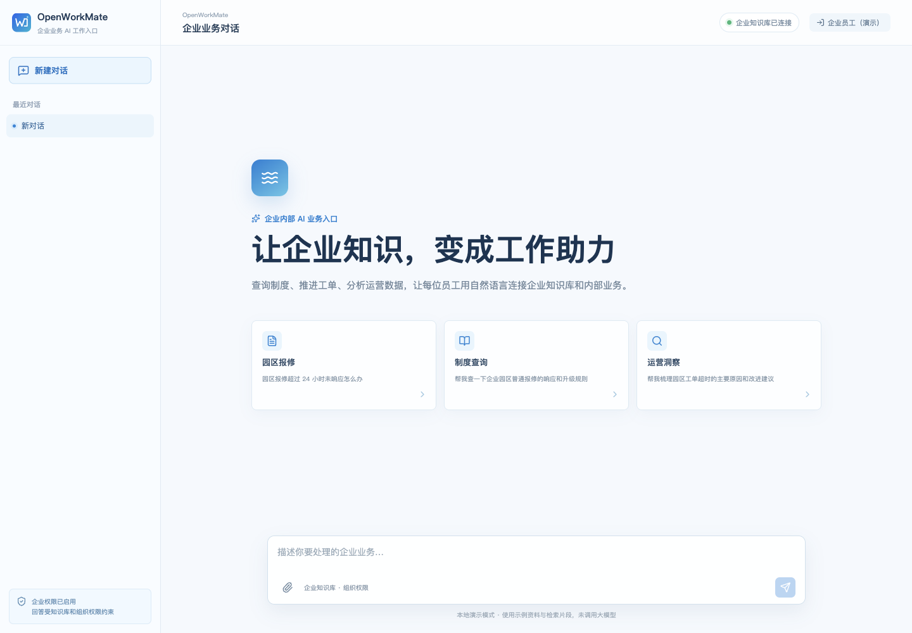
员工入口：让企业知识，变成员工真正用得上的工作助力。
先说明：这个项目怎样使用 GPT‑6 开发
这轮开源版本由维护者使用 GPT‑6 辅助开发。 GPT‑6 参与了开源整理、品牌替换、功能补充、测试验证和文章编写；维护者负责提出业务需求、判断实现边界、验收和发布。
它并不是一句提示词生成的全新项目。桌面基础来自 MIT 开源项目 ClawX，并保留 OpenClaw 运行时集成，以及上游和早期迭代的贡献与版权声明。新的企业场景围绕知识、Skill、连接器与治理逐步扩展。
也要区分两件事：开发使用 GPT‑6，不等于用户使用产品时必须接入 GPT‑6。 当前 Web 后端支持服务端 DeepSeek/兼容接口；桌面端保留原有 Provider 体系。默认本地演示模式不需要模型密钥。
下文的 15 张功能截图全部来自实际运行的界面和独立演示数据库。知识材料、组织身份和连接器均为样例；问答截图展示的是明确标注的检索演示，不是伪装成真实模型回答的效果图，也没有访问真实企业业务系统。
为什么值得做：把“问人”变成可复用的组织能力
一个通用模型通常不知道你所在组织的流程和数据。就算把制度放进上下文，它也不能天然替你完成工单操作，更不能天然获得业务权限。
企业工作伙伴要解决的是三个连接：
- 把问题与组织知识连接起来：回答有依据，员工能追溯到原文。
- 把业务经验与可执行能力连接起来：不是只有提示词，而是有输入、工具、风险和输出契约。
- 把自然语言与业务系统连接起来：查询可以执行，写入需要确认，过程留下审计记录。
它的价值不在于“再造一个 OA”，而在于为已有系统提供一个更容易使用的入口，并把分散的业务经验沉淀成可以维护的资产。
是否真正减少查询时间、降低重复沟通，需要结合企业自己的任务和数据评估。这个开源版本没有虚构效率提升百分比，也不承诺自动替代专业岗位。
第一站：员工只需要打开网页
Web 是主要体验路径，不要求所有员工安装 Electron，也不要求每台电脑运行 OpenClaw。
员工可以描述问题，看到 Markdown 渲染后的回答、依据分类和来源引用。当前页面支持会话切换；历史还保存在页面内存中，服务端持久化会话是后续规划。
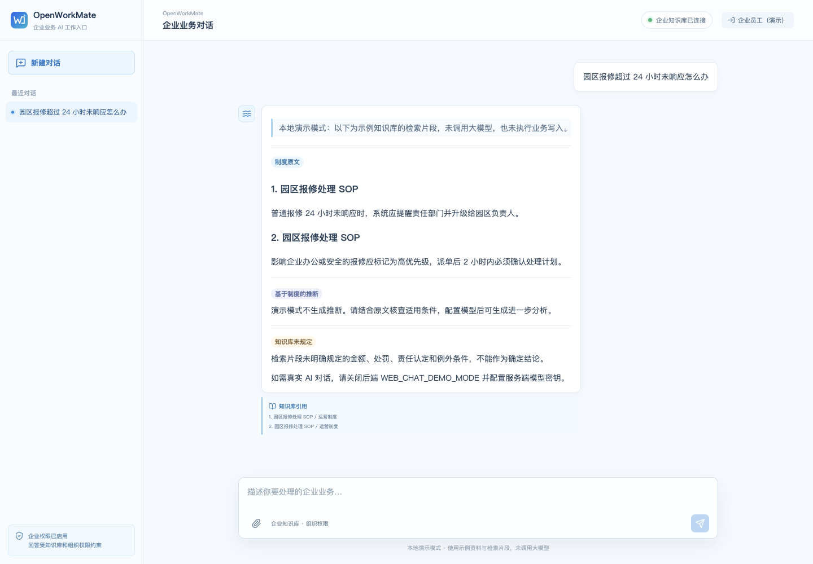
示例：报修超过 24 小时未响应，检索结果引用对应 SOP。演示模式没有调用大模型。
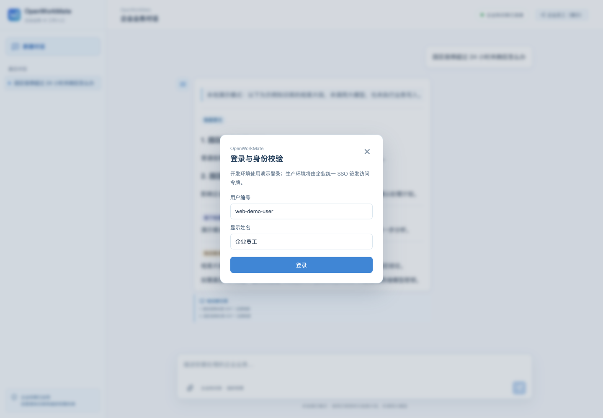
开发登录用于本地验证。生产需要配置真实身份体系，不能沿用演示账号。
Electron 仍然保留。当任务需要本地文件、桌面运行时或本机工具时，它有独立价值；如果需求只是制度查询和业务接口调用，先用 Web 通常更直接。
第二站：知识库不是“上传完就结束”
管理员可以导入 PDF、DOCX、XLSX、CSV、Markdown、JSON 和文本。后端将导入任务持久化，Worker 完成解析、切片和索引，再按当前员工身份过滤检索结果。
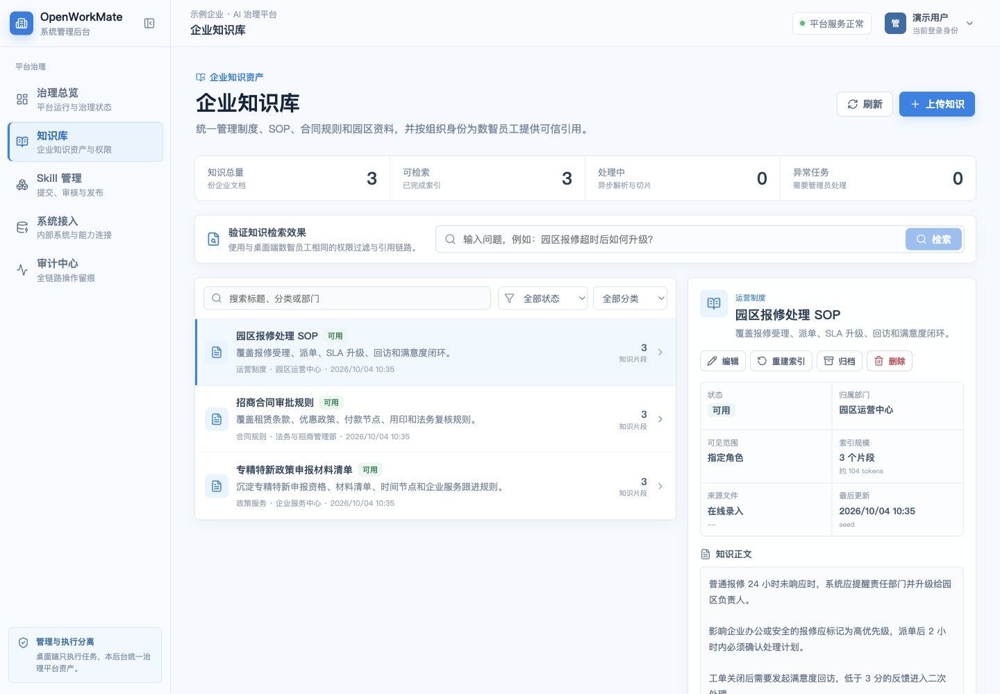
分类、归属部门、可见范围、片段数量和正文集中管理。
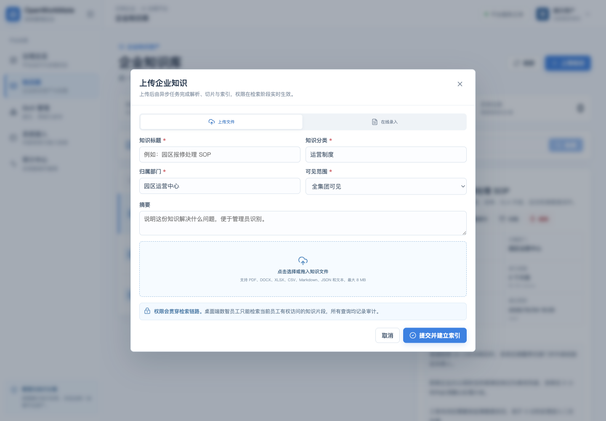
文件进入异步处理链路，而不是只作为聊天附件存在。
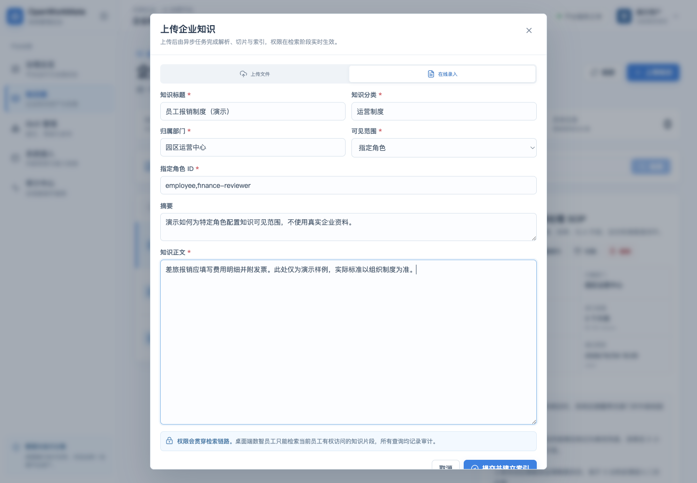
在线录入也能配置角色范围。图中员工和角色 ID 均为样例。
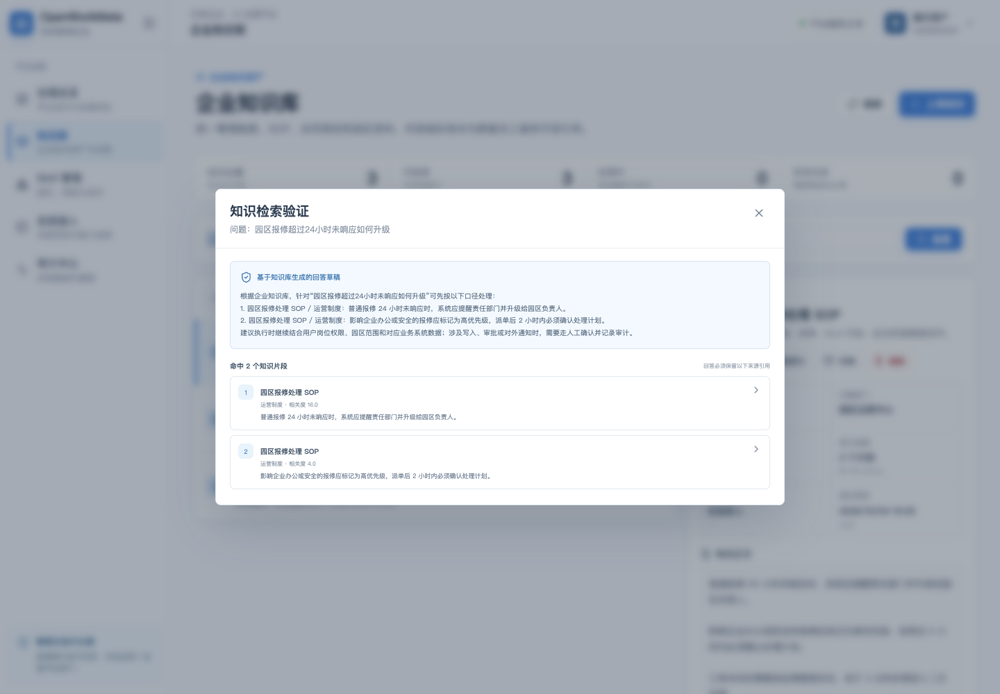
管理员可以直接检查命中了哪些片段。界面中的相关度是内部排序分数，不是“答案可信概率”。
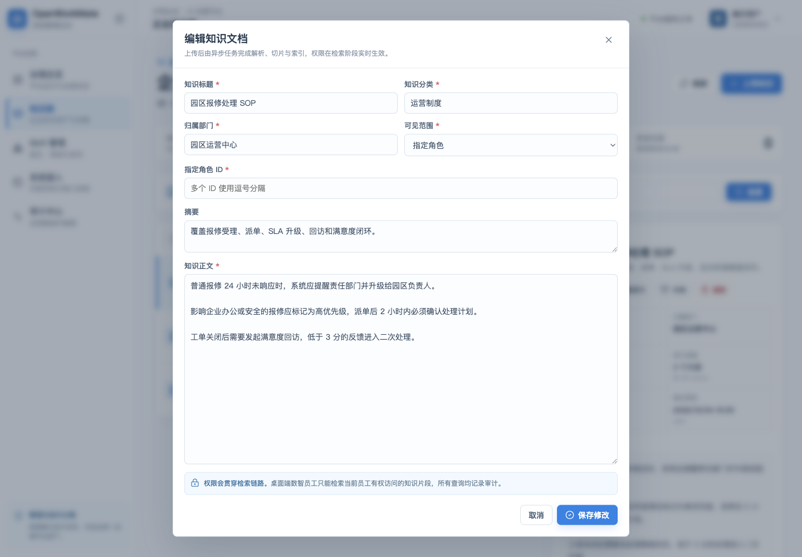
维护制度、调整权限和重新索引，都是持续运营的一部分。
现在用的是什么“向量数据库”？
当前数据存储使用 MongoDB，没有要求部署专用向量数据库。
默认检索采用中文 Bigram：把连续中文字符拆成相邻两字组合，再根据匹配程度排序。例如“工单查询”可拆成“工单”“单查”“查询”。这是一种关键词相关性方法，不等于模型理解语义。
可选 Embedding 路径会把向量存入 MongoDB，再由应用层进行混合排序。它适合验证路径，但尚未建设面向大规模知识库的专用向量索引。接下来需要用实际问题评测召回效果，再选择索引、重排和容量方案。
第三站：把业务经验变成 Skill
这里的 Skill 不是“给模型写一段角色提示词”这么简单。
一份 manifest 描述能力名称、业务输入、调用工具、风险等级、允许角色、人工确认策略和输出契约。平台校验、审核和发布后，Runtime 才会执行已启用的能力。
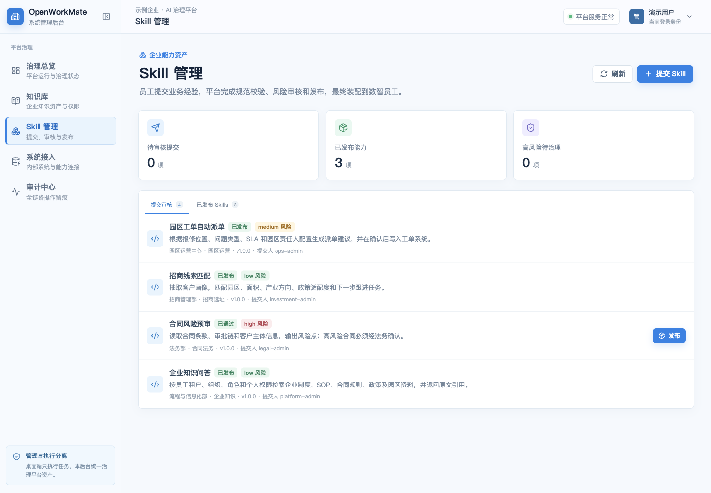
示例包含工单派单、线索匹配、合同风险预审和知识问答。列表状态是演示数据，不代表这些企业系统已经真实接入。
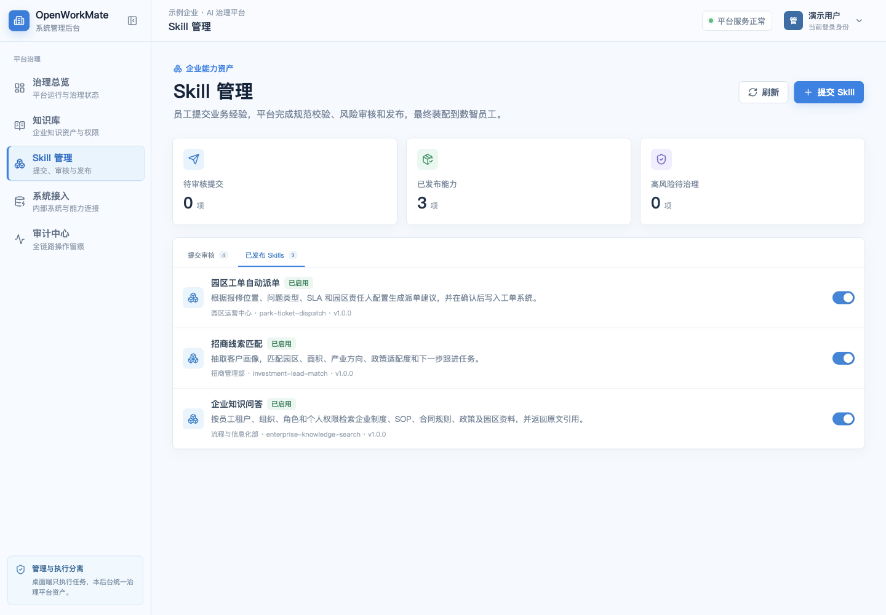
发布与启停分开管理，能力不应上传后立即无条件执行。
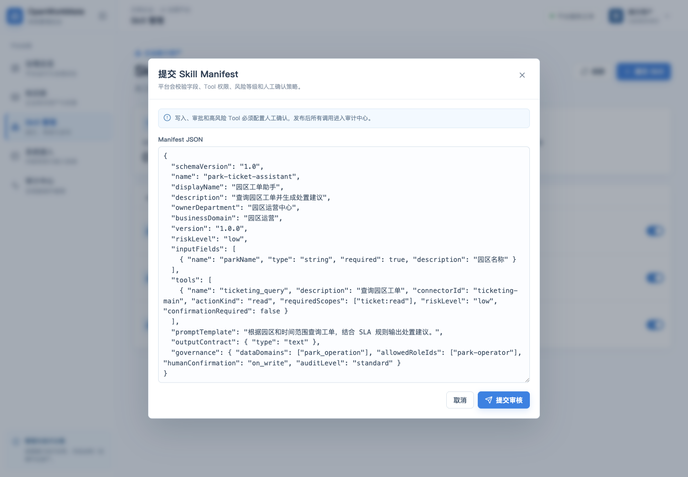
通过明确的配置描述能力，而不是把风险控制藏在一段自然语言里。
当前版本已经有校验、审核、发布、角色门控、工具执行和结构化输出检查；它还不是完整的通用工作流平台。多步骤编排、可视化编辑、自动评测、灰度发布等，仍需继续建设。
第四站：到底怎么调用 OA、工单和 CRM？
当前真实接入走的是 后端 HTTP/HTTPS + JSON，不是默认通过 RPC 框架，也不是通过 RPA 模拟点击其他系统。
流程是：员工提出任务 → Skill Runtime 检查身份与风险 → 选择连接器能力 → HTTP Adapter 组装请求 → 业务系统检查权限并返回结果。
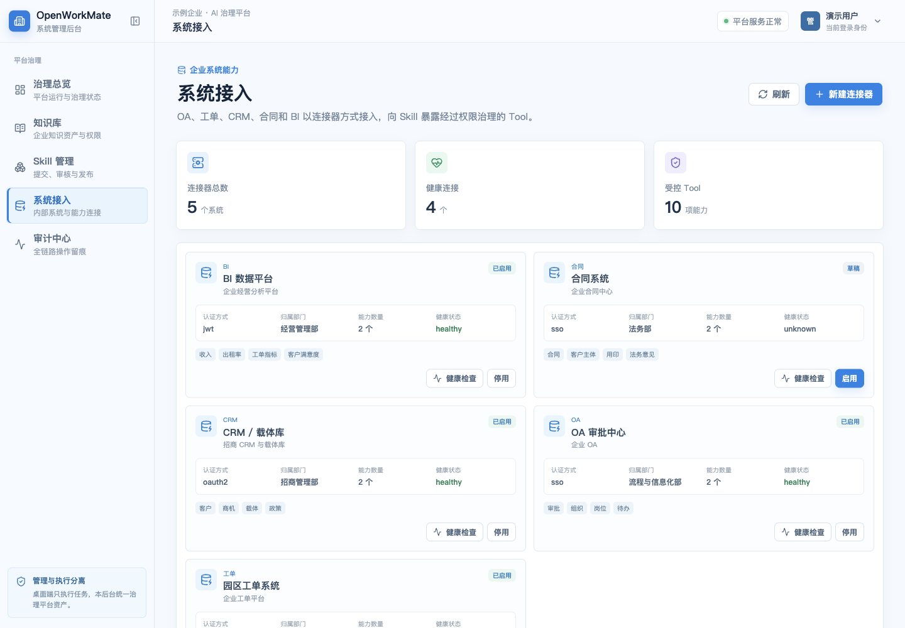
当前页面展示五类演示连接器；真实接口需要单独配置与联调。示例中的 OAuth2/SSO 标签并不意味着已实现所有系统的换票和续期。
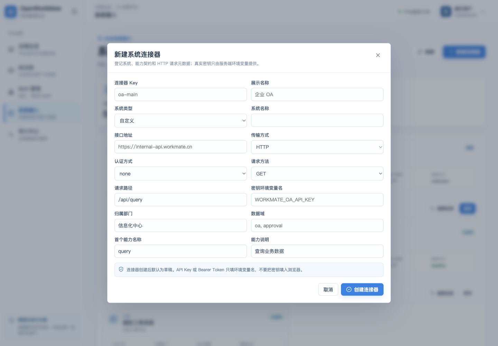
基础连接器可以在界面创建；高级字段映射目前通过 API 配置。凭证放在后端环境变量中，不写入文章、浏览器或公开仓库。
以“工单查询”为例，业务系统需要提供网络可达的接口、认证方式、响应契约，以及员工身份和数据权限约定。原有 API 符合契约时可以直接复用，不必为了接入而重写整个系统。
以下是一个精简的配置示例，不是某个真实系统的接口：
{
"search": {
"path": "/api/workorders/list",
"method": "GET",
"queryMapping": {
"keyword": "filters.keyword",
"employeeId": "context.userId"
},
"response": {
"successPath": "code",
"successValues": [0],
"recordsPath": "data.records"
}
}
}
这段配置表达三个关键点：输入字段可以映射；员工身份来自后端可信上下文；业务成功不能只看 HTTP 200，还要检查系统自己的成功码。
尤其要注意：平台 userId 不一定是业务系统的员工编号。需要联调身份映射；传递 employeeId 也不等于已经完成数据授权，工单系统仍必须校验这个员工能看哪些工单。
OAuth2 自动续期、自定义签名、SSO 换票等复杂协议，当前需要开发专用 Adapter。现有 scope 声明也还没有形成完整的运行时强制授权，不能把它当作生产安全保证。
写操作为什么不能“一句话直接执行”？
查询工单和派单，不是同一种风险。
写操作先生成确认请求，人工确认后再执行。确认不仅绑定工具名称，还绑定租户、执行人、业务参数、认证上下文和连接器配置；参数改变后，旧确认不能继续使用。
下面摘录确认令牌原子消费的核心逻辑，省略了外层校验：
return this.confirmationModel.findOneAndUpdate({
tenantId: ctx.tenantId,
toolName,
requestedBy: ctx.userId,
executionHash,
expiresAt: { $gt: new Date() },
status: 'approved',
approvalTokenHash: hashConfirmationToken(token),
}, {
$set: { status: 'used', usedAt: new Date() },
$unset: { approvalTokenHash: 1 },
}, { new: true });
条件匹配与状态更新在同一次数据库操作中完成，避免并发重复消费同一个确认令牌。
这不等于跨系统“恰好执行一次”。请求超时后，业务系统可能已经完成写入；生产还需要业务侧幂等键、状态核查和错误恢复流程。平台目前不自动重试写入。
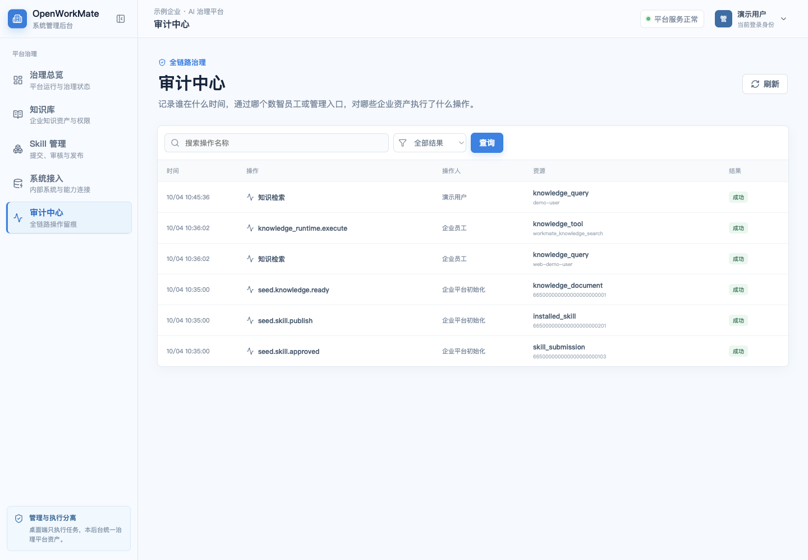
图中既有初始化样例，也有本次真实产生的知识检索记录。审计用于追溯过程，不等于已经满足某项合规认证。
技术架构：三个入口，一套企业后端
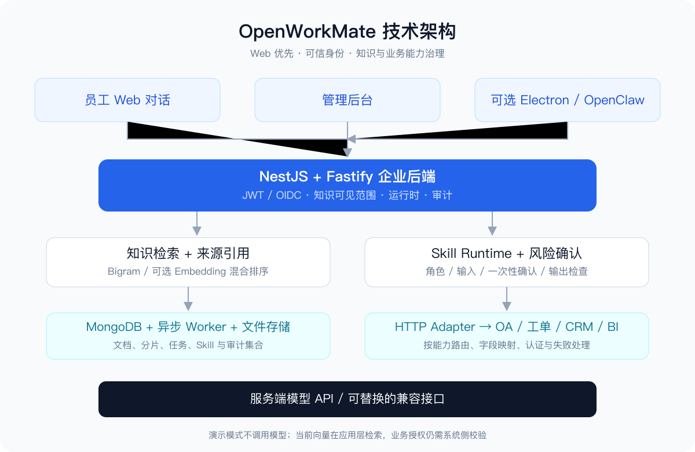
- 员工 Web：React + Vite，问答、Markdown 渲染和来源引用。
- 治理后台：React，管理知识、Skill、连接器和审计。
- 企业后端：NestJS + Fastify，负责身份、检索、Runtime、确认与模型调用。
- 数据与任务：MongoDB，保存知识、分片、导入任务和治理数据；默认文件存储是本地目录。
- 可选桌面：Electron + ClawX/OpenClaw，保留本机能力，Renderer 经 Main 代理访问。
模型密钥留在服务器端。需要说明的是：调用外部模型时，问题、检索片段及工具结果可能发送给模型服务。私有部署应用不自动意味着所有数据不出网；企业必须明确模型和数据边界。
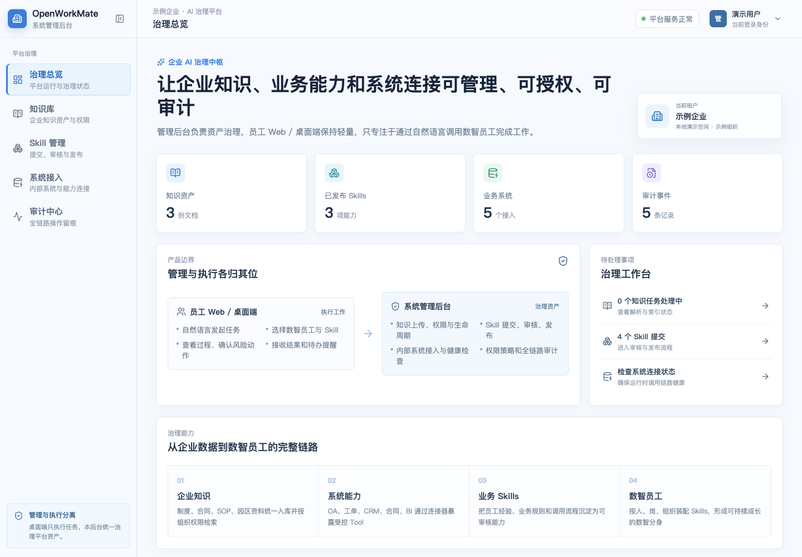
管理与执行分开：员工面向任务，管理员面向组织资产与风险。
可以从哪些场景开始？
制度与 SOP 查询。 找到规则，并展示原文引用。最适合先做一个范围小、能人工判断答案的试点。
工单辅助处理。 查询进度、匹配处置规则、提出派单建议。当前有演示能力和 HTTP 接入基础，真实派单必须联调权限、确认与幂等。
合同规则检索。 查审批要求和条款规则，帮助准备材料。不能把模型输出替代法务判断；合同风险预审样例也不是成熟法律审核服务。
客户与运营查询。 接入 CRM、BI 查询接口，让员工用自然语言描述需求。业务数据必须按实际权限返回，不能给模型开放无限制数据库访问。
企业服务材料助手。 根据内部资料整理材料清单和办理路径。外部政策变化需要更新来源、标注时间并由负责人核验。
先选一个真实、频繁、边界清楚的任务，比同时接入所有系统更容易判断价值。
怎么运行，怎样走向服务器？
本地体验需要 Node.js、pnpm 和 MongoDB。只体验 Web 不需要 GPU，也不需要独立向量库；真实模型可调用外部服务。
git clone https://github.com/chencheng666/openworkmate.git
cd openworkmate
pnpm install --frozen-lockfile
随后按 README 配置样例环境，启动 MongoDB、初始化演示数据，再分别启动后端、员工 Web 和治理后台。
当前仓库提供 MongoDB 的 Docker Compose 和多服务本地启动说明，还不是整个应用的一键生产部署。服务器规划应先根据并发、文件量、解析任务和检索规模实测；若另行自部署模型，GPU 与模型内存是独立容量问题。
生产前必须完成真实 JWT/OIDC 身份与权限验证，关闭开发身份和演示模式，配置 HTTPS、强随机密钥、备份、持久化存储、模型出网规则和业务授权。这个版本没有通过生产安全审计，不建议把本地配置直接暴露到公网。
接下来想一起做什么？
近期重点是把“能演示”逐步推进到“能可靠接入”：
- 完整应用容器化、统一启动、环境检查与备份恢复教程。
- 更严格的企业身份、业务员工映射、scope 强制授权和细粒度数据权限。
- 真实工单/CRM/OA Adapter、OAuth2 续期、幂等与失败恢复。
- 知识检索评测、向量索引、混合检索与重排，再推进 OCR 和资料更新。
- 流式回答、服务端会话持久化、用户反馈和更透明的执行进度。
- Skill 可视化编辑、多步骤任务、版本治理和自动化回归评测。
完整计划见 路线图。这些是方向，不是已完成功能，也没有承诺未经验证的上线日期。
开源不是终点，是把问题交给更多真实使用者
这轮发布去除了企业专属文案、原有标识和专属图片，使用中性品牌和独立演示数据；新仓库从干净的首个提交开始，不携带旧项目历史、实际环境配置或本地数据。
项目采用 MIT 许可证，保留上游版权与依赖来源。你可以学习、改造和参与维护，但在自己的企业上线前，仍需要完成业务验收与安全评估。
如果你是业务同学，欢迎描述“每天最想交给助手的一件事”。如果你是开发者，欢迎贡献接口 Adapter、测试、部署文档和检索评测。如果你关注产品，欢迎指出哪里不够直观、哪一步应该留给人决定。
不必等到完整方案才来参与，也欢迎提出反对意见：哪些任务不适合自动化，哪些权限必须保守，哪些场景应该先做好查询再考虑写入。
欢迎 Star、提 Issue、参与 Discussions，或者提交 PR。一起把它做成真正有用的企业工作伙伴。